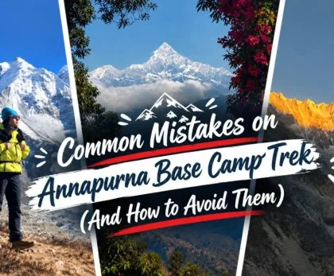
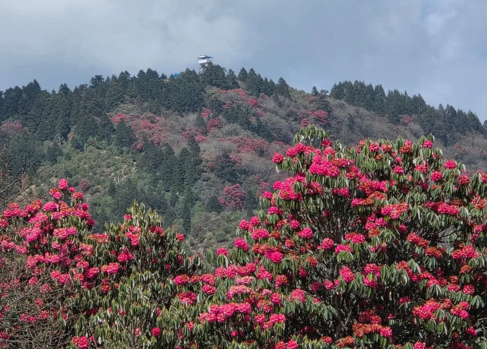
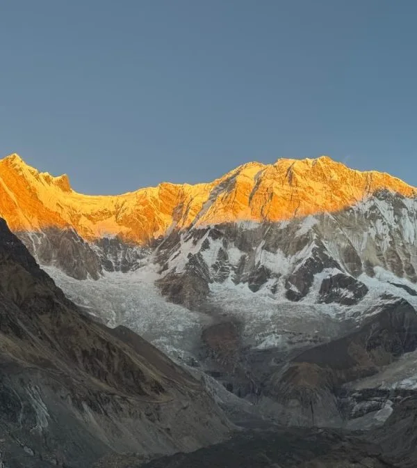

The Fine Line Between Triumph and Misery: Why Smart Trekkers Make Critical Errors
The Annapurna Sanctuary possesses a deceptive geography. Because the maximum elevation of Annapurna Base Camp is 4,130 meters—more than 1,200 vertical meters lower than Everest Base Camp or Thorong La Pass—many hikers mistakenly assume the trek is an easy, entry-level stroll. They assume that if they can run a 10K road race or spend weekends walking forest trails, the Himalaya will pose little challenge.
This false sense of security is precisely why preventable errors occur with astonishing frequency. The Annapurna trail does not climb gently; it forces your body through violent elevation oscillations, plunging hundreds of meters into damp, shaded river defiles before rocketing up relentless, hand-hewn stone staircases. When you combine acute physical exertion with rapidly dropping ambient temperatures, high humidity, and thin air, minor tactical errors snowball quickly.
The Golden Guiding Principle: The mountain does not care about your marathon PR or gym routine. Success in the Annapurna Sanctuary is about pacing, thermal discipline, hydration mechanics, and situational humility. Learn the common traps before you take your first step.
Mistake #1: Overpacking the Daypack & Ignoring the 8kg Rule
The single most universal beginner mistake is carrying far too much weight in your daypack. Many unguided trekkers attempt to carry 14 to 18 kilograms on their backs, packed with heavy electronics, multiple pairs of jeans, redundant toiletries, and hardback books. On flat ground, an 16kg backpack feels manageable. After climbing 3,000 vertical stone steps in the midday sun, that same pack feels like a concrete gravestone strapped to your spine.
Excessive pack weight alters your center of gravity, multiplies the downward impact shock on your knees by a factor of four, rapidly exhausts your quadriceps and calves, and dramatically increases the risk of tripping or twisting an ankle on uneven stone steps.
| Gear Category | Target Daypack Weight | Common Beginner Error | How to Fix It |
|---|---|---|---|
| Hydration | 1.5 kg - 2.0 kg | Carrying 4L of cold water from morning | Carry 1.5L; refill/purify at tea stops along the route. |
| Insulation & Shells | 1.5 kg | Carrying heavy cotton hoodies / coats | Pack ultralight 800-fill down jacket + Gore-Tex rain shell. |
| Personal First Aid | 0.4 kg | Full hospital-grade trauma kit | Carry blister tape, ibuprofen, Diamox, and rehydration salts. |
| Electronics & Power | 0.8 kg | Multiple heavy DSLR lenses & laptops | One smartphone, one mirrorless body, one 20,000mAh power bank. |
| Total Target Pack Weight | 5.5 kg - 7.5 kg max | 14 kg - 18 kg overloading | Hire an agency porter for heavy sleeping bags and duffels. |
Mistake #2: Ascending Too Fast Above Dovan & Ignoring Early AMS
Because the lower section of the trek feels temperate and lush, many physically fit hikers push aggressively fast through the upper gorge. It is common to see ambitious trekkers bypass Himalaya Hotel and Deurali (3,200m), attempting to hike straight from Bamboo (2,310m) all the way to Machapuchare Base Camp (3,700m) or even ABC (4,130m) in a single day.
Gaining over 1,400 vertical meters in 24 hours above 3,000 meters violates every foundational principle of high-altitude medicine. By the time these hikers reach MBC, the physiological penalty is immediate: debilitating throbbing headaches, nausea, loss of balance, and vomiting. In severe cases, this triggers life-threatening High-Altitude Pulmonary Edema (HAPE) or Cerebral Edema (HACE), requiring emergency helicopter extraction.
Acclimatization Ceiling Rule: Never ascend more than 500 to 600 vertical meters of sleeping altitude per day once you pass 3,000 meters. Always spend a mandatory night at Deurali (3,200m) or MBC (3,700m) before sleeping at Annapurna Base Camp.

Mistake #3: Reckless Staircase Descent & Knee Blowout Syndrome
The Annapurna Base Camp trail features more than 6,000 stone steps. Most hikers mentally prepare for the cardiovascular burn of climbing up, but almost nobody trains for the mechanical destruction of descending. The most notorious casualty on the trail is patellofemoral pain syndrome (commonly known as 'Trekker's Knee').
Beginner hikers make three critical biomechanical mistakes on descents:
- Locking the Knees on Landing: Stomping straight down onto locked knee joints transfers 100% of the kinetic impact directly through the cartilage and meniscus.
- Leaning Forward Away from the Mountain: Pitching your torso forward shifts your center of gravity ahead of your base of support, causing severe quad strain and increasing the risk of forward face-plant falls.
- Not Using or Misusing Trekking Poles: Carrying trekking poles strapped to a backpack—or holding them without utilizing the wrist straps—deprives your lower body of vital shock absorption. Properly configured trekking poles absorb 20% to 25% of downward ground reaction force with each step.
| Trail Phase | Biomechanics Impact | Common Form Mistake | Correct Alpine Technique |
|---|---|---|---|
| Steep Ascent (Ulleri / Sinuwa) | High cardiovascular & glute load | Taking massive, leaping steps | Short, rhythmic 'Sherpa steps'; breathe in cadence with feet. |
| Steep Descent (Chhomrong Stairs) | Extreme patellar tendon impact | Landing hard on heels with locked knees | Keep knees softly flexed; land softly on midfoot. |
| Poles on Descents | Upper body kinetic load sharing | Poles set too short; not planting ahead | Lengthen poles by 5-10cm; plant both tips ahead before stepping down. |
Mistake #4: Wearing Cotton Base Layers & Sweating into the Shaded Cold
In outdoor mountaineering, there is a legendary adage: 'Cotton kills.' This is not hyperbole; in the deep, shaded Modi Khola gorge, wearing cotton t-shirts, cotton hoodies, or cotton socks is an express ticket to hypothermia.
During the humid, steep ascent up the Chhomrong stairs or through the Bamboo forest, you will sweat profusely. Cotton fibers absorb moisture up to 27 times their dry weight, trapping cold perspiration directly against your skin. The moment you reach the shaded gorge or stop for a tea break in a drafty dining hall, that soaked cotton acts like a refrigerated wet compress against your chest and kidneys. Your core temperature plummets rapidly, inducing uncontrollable shivering and energy depletion.
The Fix: Wear only 100% Merino wool or technical hydrophobic synthetics (polyester/polypropylene). Merino wool wicks moisture away from skin and continues to provide thermal insulation even when damp.

Mistake #5: Chronic Dehydration & Alcohol/Caffeine Pitfalls
Because the air in high mountain canyons is cool and crisp, hikers frequently fail to notice how much water they lose through exhalation and perspiration. At 3,500 meters, breathing cold, dry air expels up to double the respiratory moisture lost at sea level.
Compounding this, many trekkers celebrate arriving at teahouses by drinking beer or excessive coffee. Alcohol is a potent diuretic that disrupts sleep architecture, suppresses respiratory drive at night, and accelerates severe dehydration. Dehydration thickens blood, elevates heart rate, impairs oxygen transport to the brain, and mimics the exact symptoms of Acute Mountain Sickness.
The Fix: Enforce the 4-Liter Hydration Protocol. Drink 1 liter of warm water with electrolytes before leaving in the morning, 1.5 liters of purified water on trail, and 1.5 liters of hot tea, garlic soup, and boiled water between 4:00 PM and bedtime. Cut out alcohol completely above 2,500 meters.
Mistake #6: Brand New Unbroken Boots & Inadequate Sock Layering
There is nothing quite as tragic on a multi-day trek as watching a trekker limp into a teahouse on Day 2 with silver-dollar-sized bloody blisters peeling off both heels. In almost every case, the cause is identical: brand-new, stiff leather hiking boots purchased two days before the flight to Nepal.
Modern stone staircases require boots that have molded to your individual foot morphology. Unbroken boots create intense heel friction on ascents and toe-jam bruising on steep descents.
The Prevention Protocol:
- Break in your footwear thoroughly for at least 4 to 6 weeks before your trip on varied terrain and stairs.
- Wear dual-layer socks: a thin, silky synthetic or merino liner sock beneath a medium-cushion wool trekking sock. Friction occurs between the two socks rather than between the sock and your skin.
- Carry zinc oxide tape (Leukotape) or hydrocolloid blister patches (Compeed) in your daypack. Apply tape to 'hot spots' the very second you feel friction—never wait for a full blister to form.

Mistake #7: Arriving Without Reservations in Peak Season
During the peak autumn months of October and November, and spring in April, over 400 trekkers enter the upper Annapurna Sanctuary daily. However, unlike other trekking regions in Nepal where villages have dozens of expansive hotels, the Annapurna Sanctuary has strict environmental capacity limits set by ACAP. At Deurali, MBC, and ABC, there are only 4 to 5 lodges per village with a total capacity of fewer than 250 beds.
Trekkers who attempt to hike independently without a licensed guide and arrive late in the afternoon (after 3:30 PM) often find every room fully booked. They are left with two grim choices: sleep on wooden dining room benches in freezing temperatures, or walk an extra 2 hours in the dark to find shelter.
The Fix: Trek with a reputable agency whose guides call ahead via local lodge networks to secure private rooms 24 to 48 hours in advance, or travel during shoulder months like February or late December when lodges are uncrowded.
Mistake #8: Running Out of Cash & Assuming Trail ATMs Exist
In modern travel, tourists grow accustomed to tapping contactless cards or using Apple Pay everywhere. But once you cross the suspension bridge past Nayapul or Matque, you enter an absolute cash-only mountain economy. There are zero ATMs on the entire Annapurna Base Camp circuit.
Furthermore, lodges cannot accept credit cards, digital wallets, or foreign currency. Every hot shower (NPR 300–500), hot water refill (NPR 150–250), WiFi voucher (NPR 500), battery charge (NPR 300), extra snack, and porter tip must be paid in physical Nepalese Rupee banknotes.
Trekkers who carry only NPR 10,000 frequently run out of money by Day 4, leaving them unable to purchase boiled water or charge their safety devices. Always withdraw at least NPR 30,000 to 35,000 per person in Pokhara before heading to the trailhead.
Mistake #9: Walking Through Modi Khola Avalanche Couloirs at Midday
The section of the trail between Himalaya, Deurali, and Machapuchare Base Camp traverses several notorious avalanche chutes beneath the soaring vertical walls of Hiunchuli and Machapuchare. During winter (December to February) and early spring (March), snowpack accumulates on hanging alpine ledges.
The fatal mistake some hikers make is starting their hike late—leaving Deurali around 10:30 AM or 11:00 AM. By midday, intense solar radiation strikes south-facing slopes, warming the snowpack, decreasing shear strength, and triggering wet slab avalanches directly into the canyon floor.
Strict Timing Rule: Always cross the gorge between Deurali and MBC between 6:30 AM and 9:30 AM when temperatures are cold, snow is frozen solid, and stability is highest. Never linger, take extended picnic breaks, or shout loudly in designated hazard chutes.

Mistake #10: Leaving Batteries Uninsulated in Sub-Zero Rooms
You hike for five grueling days to reach Annapurna Base Camp. At 5:30 AM, you stand beneath the colossal south face of Annapurna I as the first golden sunbeams ignite the summit. You pull out your smartphone or camera to capture the shot of a lifetime—only to watch the battery indicator plummet from 80% to 0% and shut down permanently.
Lithium-ion batteries rely on liquid chemical electrolytes. In unheated teahouse bedrooms where ambient temperatures sink to -10°C, the internal resistance of the battery skyrockets, temporarily halting electrochemical flow. Leaving phones, camera batteries, and power banks on a bedside table or in your backpack overnight effectively kills them.
The Fix: Store all electronics, camera batteries, and power banks inside a wool beanie or insulated pouch, and sleep with them inside your sleeping bag next to your chest every night.
Mistake #11: Eating Heavy Western Meals Instead of High-Carb Dal Bhat
It is tempting to order comfort foods like yak cheese pizza, pasta carbonara, or burgers from teahouse menus. However, at high altitudes above 3,000 meters, your body shifts blood flow away from the gastrointestinal tract to prioritize oxygen delivery to the heart, lungs, and skeletal muscles. Digestive motility slows by up to 40%.
Heavy fats, processed meats, and dairy require immense metabolic energy to break down, frequently causing severe indigestion, acid reflux, bloating, and sleeplessness. Furthermore, kitchen ingredients like cheese and sausages are carried up over days on mules without refrigeration.
| Food Category | Recommended Trail Fuel | High-Risk / Poor Choice | Medical & Nutritional Rationale |
|---|---|---|---|
| Dinner Main | Fresh Dal Bhat Tarkari | Yak cheese pizza / burgers | Dal bhat is cooked fresh twice daily; provides clean carbs, lentils, and electrolytes. |
| Breakfast | Hot oatmeal porridge + honey | Greasy fried eggs & sausages | Oats release steady complex carbohydrates without heavy gastric load. |
| Trail Snacks | Dry roasted almonds, dates & ginger chews | Sticky heavy candy bars | Nuts and dried fruit provide natural fats and sugars without causing glycemic crashes. |
| Warm Drinks | Hot lemon ginger honey / garlic soup | Excessive espresso / alcohol | Garlic broth naturally aids circulation and oxygenation; alcohol dehydrates. |

Mistake #12: Buying Inadequate Travel Insurance With Altitude Exclusion Clauses
A staggering percentage of international trekkers purchase cheap standard travel insurance policies without reading the fine print. The vast majority of generic travel policies contain a standard exclusion clause: 'Activities above 2,500 meters or 3,000 meters are strictly excluded from coverage.'
Because Annapurna Base Camp sits at 4,130 meters, an excluded policy is completely worthless in an emergency. If you suffer acute pulmonary edema, a compound leg fracture, or severe frostbite, a chartered helicopter evacuation from ABC to a hospital in Pokhara or Kathmandu costs between USD $2,500 and $4,500. Without verified helicopter evacuation coverage, charter companies will not dispatch an aircraft until you or your family transfer cash upfront.
The Fix: Secure a dedicated mountaineering policy (such as World Nomads Explorer, Ripcord, or Global Rescue) that explicitly states coverage for medical evacuation and search-and-rescue up to at least 4,500 meters without requiring prior hospital admission approval.
The Zero-Mistake ABC Blueprint: Master Checklist & Expert Verdict
Eliminating mistakes on the Annapurna Base Camp trek is entirely achievable with structured discipline. Follow this master checklist before you tie your boot laces:
- Pre-Trip Training: Minimum 6 weeks of dedicated stair climbing with a 6kg pack. Focus on calf eccentric strength and core stability.
- Gear Verification: Two adjustable trekking poles, broken-in waterproof boots, 100% merino base layers, -10°C to -15°C down sleeping bag, and trail microspikes.
- Hydration Strategy: Two 1L wide-mouth Nalgene bottles, chlorine dioxide purification tablets or UV sterilizer, and electrolyte replacement powder packets.
- Financial Preparation: Withdraw NPR 30,000 to 35,000 in cash per person in Pokhara in mixed denominations (NPR 100, 500, and 1,000 notes).
- Pacing Protocol: Never skip Deurali or MBC overnight stops. Always cross avalanche chutes before 9:30 AM.
- Professional Guidance: Trek with a government-licensed, wilderness-first-aid certified local guide from Igloo Himalaya Treks who handles logistics, safety, and cultural connections.

Avoiding these 12 common mistakes is not about trekking in fear; it is about respecting the high Himalaya so you can immerse yourself completely in the wonder of the journey. When you are warm, hydrated, well-fed, free of blisters, and confident in your pacing, every single hour on the Annapurna trail is pure magic.
You will stand beneath the sacred, unclimbed pyramid of Machapuchare, watch the golden sun ignite the sheer south face of Annapurna I, listen to the crack of glacial ice echoing across the moraine, and share warm laughter with local teahouse families over steaming mugs of ginger tea. Prepare meticulously, step deliberately, and let the Annapurna Sanctuary work its timeless wonder upon your soul.


Ready to Experience the Himalayas?
Whether you are preparing for high-altitude trekking, cultural circuits, or alpine summit expeditions, start planning a bespoke journey tailored to your fitness, travel season, and style.